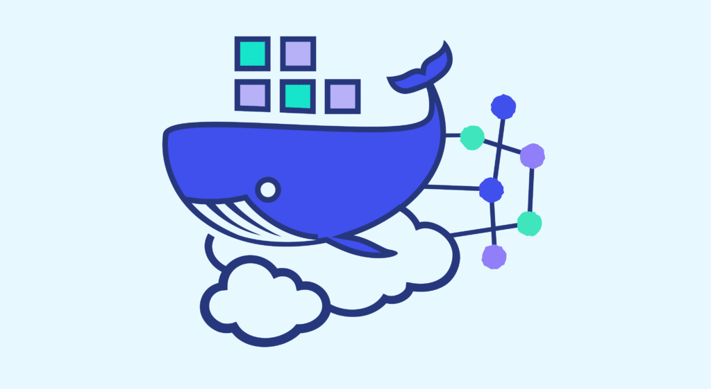

{kind=link}
Manejo de Contenedores
El manejo de contenedores es una práctica cada vez más común en el desarrollo de software moderno. Los contenedores ofrecen una forma de empaquetar una aplicación junto con todas sus dependencias y configuraciones en un entorno aislado y portátil. Esto facilita la implementación consistente de aplicaciones en diferentes entornos de ejecución, desde el desarrollo local hasta la producción en la nube.
¿Qué son los contenedores?
Los contenedores son unidades de software livianas y portátiles que encapsulan código, bibliotecas y archivos de configuración necesarios para ejecutar una aplicación. A diferencia de las máquinas virtuales, que virtualizan todo el sistema operativo subyacente, los contenedores comparten el mismo kernel del sistema operativo del host, lo que los hace más eficientes en términos de recursos y más rápidos de iniciar.
Principales tecnologías de contenedores
Docker

Docker es la plataforma de contenedores más popular y ampliamente utilizada. Proporciona una forma sencilla de crear, gestionar y desplegar contenedores utilizando imágenes predefinidas y un conjunto de herramientas intuitivas. Docker se ha convertido en un estándar de facto en el desarrollo de contenedores y es compatible con una amplia gama de tecnologías y servicios en la nube.
Kubernetes
Kubernetes es un sistema de orquestación de contenedores de código abierto desarrollado por Google. Permite la gestión automatizada y escalable de aplicaciones contenerizadas en clústeres de servidores. Kubernetes proporciona características avanzadas como el balanceo de carga, la escalabilidad automática, la gestión de almacenamiento y la auto-curación, lo que lo convierte en una opción popular para implementaciones de contenedores a gran escala.
Beneficios del manejo de contenedores
Los contenedores ofrecen una serie de beneficios para el desarrollo y despliegue de aplicaciones:
- Facilitan la implementación consistente de aplicaciones en diferentes entornos.
- Son más eficientes en términos de recursos que las máquinas virtuales.
- Permiten la gestión automatizada y escalable de aplicaciones en clústeres de servidores.
- Fomentan la modularidad y la portabilidad de las aplicaciones.
- Facilitan la colaboración y la integración continua en equipos de desarrollo.
En resumen, el manejo de contenedores es una práctica fundamental en el desarrollo de software moderno que ofrece beneficios significativos en términos de eficiencia, portabilidad y escalabilidad de las aplicaciones.